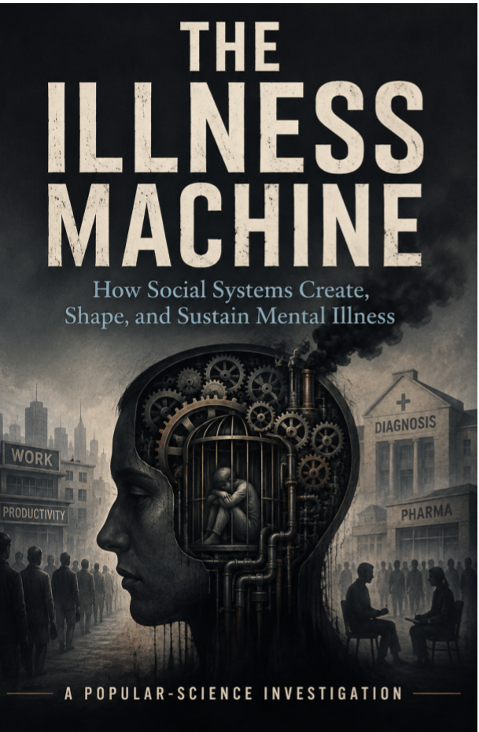

Experiments · Axiologic Research Editions
The Illness Machine
How Social Systems Create, Shape, and Sustain Mental Illness
A mind has biology, but it also has housing, work, status, safety, institutions and a world that repeatedly enters the body.
Society inside the causal question
This popular-science investigation asks whether organised social systems can create, shape or sustain mental illness. A system here is concrete: the patterned distribution of money, safety, time, housing, work, recognition, punishment, care and the power to define normality.
The book resists a single-cause answer. Depression, trauma, psychosis, bipolar disorder, addiction and undiagnosed distress do not share one biology or one relationship to the social world. Evidence is therefore calibrated by condition, research design and causal claim.
From institutions to algorithms
How does society get under the skin? Childhood, chronic threat, exclusion and material insecurity can become biological and psychological exposure.
Can institutions sustain symptoms? Hospitals, diagnoses, workplaces and welfare systems may provide care while also changing status, agency and chronicity.
What is an algorithmic institution? A platform can distribute visibility, comparison, opportunity and punishment at a scale that makes design part of the causal environment.
Treating society as part of the causal environment does not erase biology; it makes prevention and responsibility harder to outsource.
Evidence before slogan
Historical analogies and political counterfactuals are separated from direct empirical evidence, and online discussions are treated as qualitative material rather than epidemiology. The book is science communication, not diagnosis, treatment or individual medical advice.